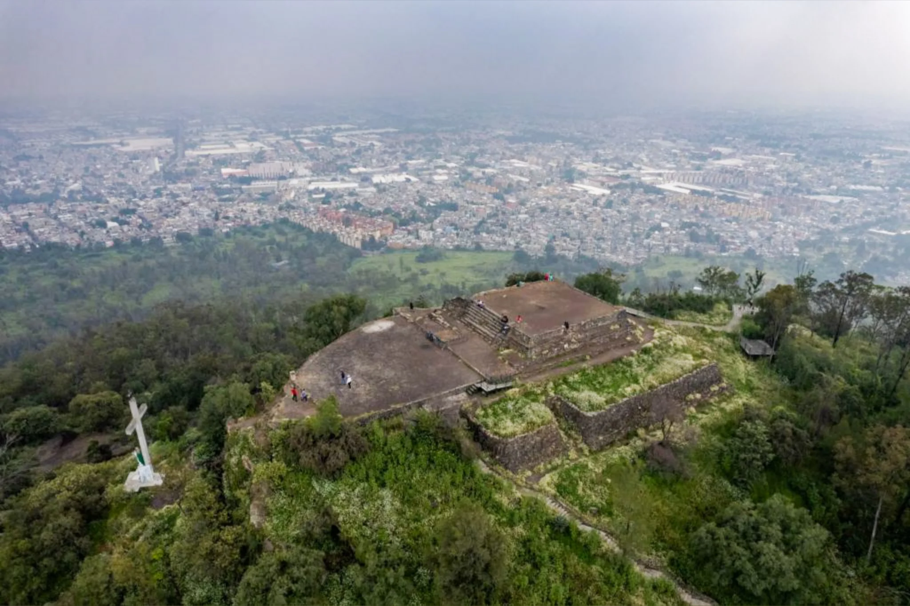

El cerro de la Estrella de nombre oficial es Huizachtepetl es una eminencia orográfica que se levanta en el centro de la Alcaldía Iztapalapa, en el oriente de la Ciudad de México. Es un punto geográfico de gran importancia arqueológica, puesto que en sus faldas se han descubierto indicios de antiguos asentamientos humanos cuya antigüedad se remonta hasta el Preclásico mesoamericano. Además, es la representación del Monte Gólgota durante escenificación de la Pasión de Cristo en Iztapalapa, importante evento religioso que año con año atrae a más de un millón de personas.
En este lugar se pueden practicar el senderismo, la caminata y el excursionismo. Es muy visitado los fines de semana ya que se realizan días de campo. También es común ver a paseantes en bicicletas por los senderos del lugar. La cueva del diablo Dentro del parque nacional del Cerro de la estrella, existe un conjunto de cuevas muy singulares que ilustran de una forma ancestral el paisaje de este parque, en este conjunto, existe una cueva muy en particular llamada “La cueva del diablo”, cuya información es limitada debido a su profundidad, dentro de la población que rodea al parque, la gente describe un gran cantidad de historias en torno de esta cueva, se dice que tiene una desembocadura hasta los límites del estado de Puebla, pero esto no está confirmado, debido a que a cierta profundidad ya no es posible la expedición, al día de hoy la cueva se encuentra resguardada para evitar cualquier accidente.
